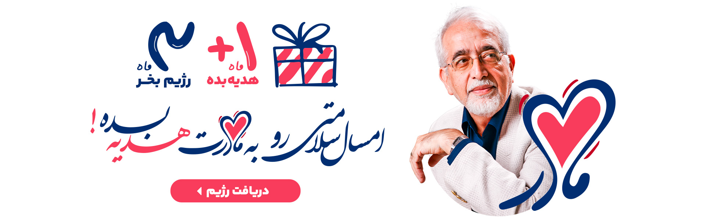
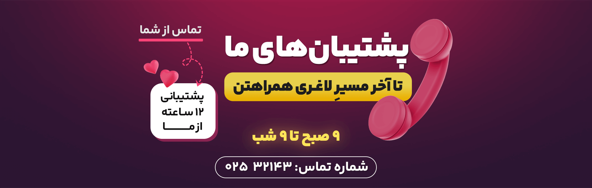

۹ مورد از خواص آویشن و اثر آن بر سلامتی
خواص آویشن برای سلامتی آویشن به دلیل طعم متمایزش تا به امروز به عنوان یک ادویه اصلی در آشپزی باقی مانده است. اما این گیاه پرفایده چه تاثیری بر بدن دارد؟ در ادامه مهمترین اثر آویشن بر سلامتی را میخوانید: منبع غنی ویتامینها و مواد معدنی ضروری وزارت کشاورزی ایالات متحده (USDA) گزارش میدهد که آویشن سرشار از مواد مغذی مفیدی برای بدن است، از جمله: ویتامین A ویتامین C مس آهن منگنز فیبر قاشق چایخوری آویشن دارای 1.28 میلی گرم ویتامین C است – طبق گفته سازمان غذا و دارو امریکا(FDA) که این تنها 1 درصد ویتامین سی مورد نیاز روزانه شما است.
بهبود خلق و خو اسانس آویشن در رایحهدرمانی نیز استفاده میشود زیرا ماده فعال آن کارواکرول است. در یک مطالعه حیوانی در سال ۲۰۱۳ نشان داده شد که کارواکرول غلظت سروتونین و دوپامین، دو هورمون تنظیمکننده خلق و خو را افزایش میدهد. اگر به طور منظم از روغن آویشن یا گیاه آویشن استفاده میکنید، ممکن است تأثیر مثبتی بر احساسات و خلق و خوی شما داشته باشد. با این حال، مطالعات انسانی بیشتری مورد نیاز است.
ادویه محبوب آشپزی آویشن یک ماده فوقالعاده است که در غذاهای سراسر جهان، بهویژه در فرانسه، ایتالیا و در سراسر دریای مدیترانه و همچنین ایران استفاده میشود: هنگام تهیه گوشت یا مرغ میتوان از برگهای تازه یا شاخههای آن کامل استفاده کنید. آویشن همچنین یک ماده عالی برای طبخ و طعمدار کردن ماهی است. آویشن را میتوانید به انواع سس پاستا استفاده کنید تا طعم بهتری به آن بدهید و طبع ماکارونی را که سرد است، متعادل کنید. آویشن همچنین ممکن است تأثیر مثبتی بر ایمنی و ماندگاری روغنهای پخت و پز داشته باشد. یک مطالعه در سال ۲۰۱۲ نشان داد که عصاره آویشن ممکن است پایداری روغن آفتابگردان را در دماهای مختلف افزایش دهد و همچنین اثرات آنتی اکسیدانی در بدن ایجاد کند
ادویه محبوب آشپزی
ادویه محبوب آشپزی آویشن یک ماده فوقالعاده است که در غذاهای سراسر جهان، بهویژه در فرانسه، ایتالیا و در سراسر دریای مدیترانه و همچنین ایران استفاده میشود: هنگام تهیه گوشت یا مرغ میتوان از برگهای تازه یا شاخههای آن کامل استفاده کنید. آویشن همچنین یک ماده عالی برای طبخ و طعمدار کردن ماهی است. آویشن را میتوانید به انواع سس پاستا استفاده کنید تا طعم بهتری به آن بدهید و طبع ماکارونی را که سرد است، متعادل کنید. آویشن همچنین ممکن است تأثیر مثبتی بر ایمنی و ماندگاری روغنهای پخت و پز داشته باشد. یک مطالعه در سال ۲۰۱۲ نشان داد که عصاره آویشن ممکن است پایداری روغن آفتابگردان را در دماهای مختلف افزایش دهد و همچنین اثرات آنتی اکسیدانی در بدن ایجاد کند
ضد عفونت باکتریایی
آیا تا به حال مسمومیت غذایی داشتهاید؟ آویشن ممکن است بتواند به پیشگیری از آن کمک کند. یک مطالعه آزمایشگاهی در سال ۲۰۱۳ نشان داد که روغن آویشن به عنوان یک نگهدارنده طبیعی محصولات غذایی در برابر چندین باکتری متداول موجود در مواد غذایی که باعث بیماری انسان میشوند، میتواند اثر ضد باکتریایی از خود نشان دهد. علاوه بر این، یک مطالعه آزمایشگاهی در سال ۲۰۱۱ نشان داد که روغن آویشن در برابر سویههای مقاوم باکتریهای استافیلوکوک، انتروکوک، اشریشیا و سودوموناس مؤثر است. مهم است که توجه داشته باشید که این بدان معنا نیست که مصرف روغن آویشن از مسمومیت غذایی شما جلوگیری میکند. به علاوه، اگر به طور منظم مکملهای آویشن مصرف میکنید، احتمالاً بسیاری از باکتریهای خوب روده خود را نیز از بین میبرید. پس بدون مشورت با پزشک و بیش از اندازه از آویشن استفاده نکنید.
عوارض جانبی مصرف آویشن
آویشن در صورت استفاده کوتاهمدت به عنوان دارو احتمالاً بیخطر است اما ممکن است در برخی افراد واکنشهای آلرژیک، سرگیجه و ناراحتی معده ایجاد کند. هنگامی که روغن آویشن روی پوست استفاده میشود در صورت استفاده کوتاه مدت، احتمالا بیخطر است اما برخی از افراد ممکن است دچار سوزش پوست شوند. مصرف گیاه آویشن ممکن است با برخی داروها تداخل دارد. آویشن برای خانمهای باردار مناسب نیست و احتمال دارد موجب سقط جنین شود. به همین دلیل بدون مشورت با پزشک خود از این گیاه استفاده نکنید. تداخل با برخی داروها داروهایی که لخته شدن خون را کند میکنند(داروهای ضد انعقاد/ ضد پلاکت) با آویشن تداخل دارند؛ زیرا آویشن ممکن است لخته شدن خون را کند کند. مصرف آویشن همراه با داروهایی که لخته شدن خون را کند میکنند، ممکن است خطر کبودی و خونریزی را افزایش دهد؛ داروهای خشککننده(داروهای آنتی کولینرژیک) با آویشن تداخل دارند؛ استروژن با آویشن تعامل دارد.آویشن ممکن است مانند استروژن در بدن عمل کند و مصرف آویشن همراه با استروژن ممکن است اثرات استروژن را کاهش دهد؛ داروهای مختلف مورد استفاده برای گلوکوم، بیماری آلزایمر و داروهای کولینرژیک با آویشن تداخل دارند.